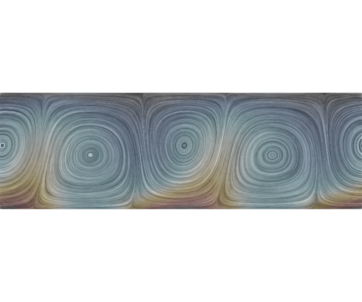

D. Floryan and J. M. Floryan, Journal of Fluid Mechanics (2015), 765, 353–395
doi: 10.1017/jfm.2014.683
Drag reduction is a major theme in fluid mechanics. Using theory, we discovered a technique that is very effective for Reynolds numbers less than 10: heating surfaces with spatially distributed heating patterns. The heating induces buoyancy forces that create separation bubbles that act as bearings, reducing drag. This is similar to the superhydrophobic effect, but works in a single-phase fluid. A rendering is shown in the image, with the streaks showing the flow pattern and the colour showing the temperature. This effect has been experimentally confirmed, with striking agreement between theory and experiments.
It is known that the drag for flows driven by a pressure gradient in heated channels can be reduced below the level found in isothermal channels. This reduction occurs for spatially modulated heating and is associated with the formation of separation bubbles which isolate the main stream from direct contact with the solid wall. It is demonstrated that the use of a proper combination of spatially distributed and spatially uniform heating components results in an increase in the horizontal and vertical temperature gradients which lead to an intensification of convection which, in turn, significantly increases the drag reduction. An excessive increase of the uniform heating leads to breakup of the bubbles and the formation of complex secondary states, resulting in a deterioration of the system performance. This performance may, under certain conditions, still be better than that achieved using only spatially distributed heating. Detailed calculations have been carried out for the Prandtl number Pr = 0.71 and demonstrate that this technique is effective for flows with a Reynolds number Re < 10; faster flows wash away separation bubbles. The question of net gain remains to be settled as it depends on the method used to achieve the desired wall temperature and on the cost of the required energy. The presented results provide a basis for the design of passive flow control techniques utilizing heating patterns as controlling agents.